전기철도기사 (2020-08-22 기출문제)
1과목: 전기철도공학
1. 강제전차선 경간 중앙의 처짐(이도)은 지지점 간격(경간)의 얼마 이하로 하여야 하는가?
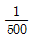
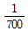
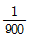
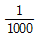
(정답률: 69%)

2. 직류전기철도에서 귀선용 레일의 전위에 대한 설명으로 틀린 것은?
- 부하전류가 작을수록 높아진다.
- 레일의 고유저항이 클수록 높아진다.
- 레일의 대지 절연저항이 클수록 높게된다.
- 부하점과 변전소간 거리가 멀수록 높아진다.
(정답률: 66%)
3. 전차선의 파동전파속도 C(m/s)를 나타내는 식은? (단, T: 전차선장력(N), L: 전차선의 단위질량(kg/m))
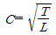
- C=L3×T
- C=2T×L2
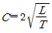
(정답률: 71%)
4. 다음 그림과 같은 커티너리 조가방식은?
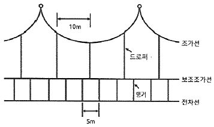
- 콤파운드 커티너리
- 심플 커티너리
- 변 Y형 심플 커티너리
- 사조식
(정답률: 62%)
5. 전차선로 계통보호방식 및 설비의 설명으로 틀린 것은?
- 보호선에 의한 방식은 애자의 경계에서 연결하여 지락도선을 보호선에 접속하는 방식이다.
- 가공지선에 의한 방식은 매설지선 설치 후 공용으로 접지하여 지락사고 시 대지전위를 억제하는 방식이다.
- 보안기는 교류구간에서 가공지선을 설치하는 경우에 가공지선과 부급전선 사잉에 설치하는 설비이다.
- 피뢰기는 뇌 및 회로이상전압을 대지로 방전시켜 이상전압을 저감시키는 설비이다.
(정답률: 64%)
6. 가공전차선 구간과 지하 강체전차선과의 이행구간에 압사특성을 점진적으로 같게 하여 팬터그래프가 원활히 통과할 수 있도록 하는 장치는?
- 확장 장치
- 직접 유도 장치
- 구분 장치
- 고정점 장치
(정답률: 62%)
7. 에어섹션 개소에서 구분용 애자의 하단은 본선의 전차선 높이에서 몇 mm 이상으로 시설하여야 하는가?
- 100
- 200
- 300
- 400
(정답률: 43%)
8. 고속철도구간(속도등급은 250킬로급 초과) 에어조인트의 평행뿐에서 전차선의 상호간격(mm)은?
- 90
- 100
- 200
- 350
(정답률: 45%)
9. 경간 60m, 표준장력 1000kgf, 합싱 전차선의 단위 중량 1.795kgf/m, 행거의 최소길이 0.15m일 때, 전차선 가고(mm)는 약 얼마인가?
- 560
- 710
- 858
- 960
(정답률: 47%)
10. 교류전기철도의 BT급전방식에서 흡상변압기의 주요 설치목적은?
- 전압강하 방지
- 이상전압 방지
- 고조파 바생억제
- 통신유도장애 경감
(정답률: 49%)
11. 금속체가 레일에 대하여 높은 전위에 있는 경우에만 전류를 유출시키는 방식으로써 전식 방지에 널리 사용하는 방식은?
- 직류 배류 방식
- 선택 배류 방식
- 강제 배류 방식
- 간접 배류 방식
(정답률: 69%)
12. 가공 급전선(케이블 제외)의 인장하중의 안전율은?
- 2.0
- 2.2
- 2.5
- 3.0
(정답률: 44%)
13. 첫 번째 전주의 전차선 높이가 5.2mm이다. 이때 경간 50m, 구배 3/1000으로 전차선이 낮아진다면 다음 전주의 전차선 높이(m)는?
- 5.1
- 5.⑤
- 5
- 4.95
(정답률: 54%)
14. 교류전차선로의 지락고장 발생 시 고장 검출을 하기 위한 계통의 보호방식이 아닌 것은?
- 보호선
- 가공지선
- 매설지선
- 피뢰선
(정답률: 40%)
15. 설정캔트를 구하는 계산식으로 옳은 것은? (단, C:설정캔트(mm), V:열차최고속도(km/h), R: 곡선반경(m), D: 부족캔트(mm))
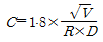
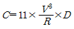
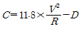
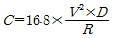
(정답률: 43%)
16. 경간 중앙 드로퍼에 설치되는 M-T 균압선의 최대 설치간격(m)은? (단, 속도 등급은 250킬로급 이상이다.)
- 100
- 200
- 300
- 400
(정답률: 49%)
17. 직류 강체전차선로(T-Bar 방식)의 브래킷의 표준 간격(m)은?
- 5
- 9
- 14
- 18
(정답률: 66%)
18. 속도등급 200킬로급 이하에서 가동브래킷 곡선당김금구의 설치 각도는?
- 레일에 대하여 궁형은 11°, 직선형은 15°
- 레일에 대하여 궁형은 15°, 직선형은 11°
- 레일에 대하여 궁형은 14°, 직선형은 18°
- 레일에 대하여 궁형은 18°, 직선형은 14°
(정답률: 57%)
19. 교류 전기철도 변전소에서 사용되는 재폐로 계전기를 나타내는 것은?
- 21F
- 51F
- 79F
- 99F
(정답률: 57%)
20. 전차선의 편위를 정하는 요소가 아닌 것은?
- 전기차 동요에 따른 집전장치의 편위
- 풍압에 따른 전차선의 편위
- 곡선로에 의한 전차선의 편위
- 곡선로의 건축한계에 따른 전차선의 편위
(정답률: 47%)
2과목: 전기철도 구조물공학
21. 압축력(항압용)과 인장력(인장용)이 가해지는 가동브래킷 개소에 사용되는 애자는?
- 현수애자
- 지지애자
- 내무애자
- 장간애자
(정답률: 47%)
22. 전철주 푸싱(pushing) 기초 바닥면의 유효지지력이 100kN/m2이고 기초 바닥면의 단면계수가 1.13m3일 때, 기초바닥면의 허용 저항모멘트(kN·m)는?
- 100
- 113
- 200
- 226
(정답률: 44%)
23. 전주 또는 고정빔 등에 취부하여 급전선, 부급전선, 보호선 등을 지지 또는 인류하기 위한 구조물은?
- 전주 대용물
- 하수강
- 완철
- 평형틀
(정답률: 59%)
24. 도로를 횡단하여 시설하는 지선의 높이는 지표상 몇 m 이상으로 하는가?
- 5
- 6
- 7
- 8
(정답률: 47%)
25. 그림과 같은 트러스구조물에서 AC의 부재력(t)은?
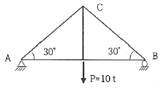
- 6t(인장)
- 6.5t(압축)
- 9t(인장)
- 10t(압축)
(정답률: 47%)
26. 다음 중 특정 길이의 선분을 회전시킬 때 생기는 표면적을 계산할 때 이용하는 것은?
- 베티의 정리
- 라미의 정리
- 뉴톤의 정리
- 파프스의 정리
(정답률: 62%)
27. 안정한 구조물에 쓰이는 것으로 힘의 평형조건만으로 구조물의 모든 반력과 부재의 응력을 구할 수 있을 때 이를 무엇이라 하는가?
- 변형
- 불안정
- 정정
- 부재
(정답률: 60%)
28. 봉이 축 방향으로 단면에 균일한 인장응력을 받고 있다. 인장응력이 300kgf/cm2이면 체적변형률은 약 얼마인가? (단, 프와송비v=0.4, 탄성계수E=2.1×104kgf/cm2)
- 0.0029
- 0.0⑤7
- 0.029
- 0.⑤7
(정답률: 20%)
29. 단면의 폭이 15cm, 높이가 h인 직사각형 단면에서 단면계수가 1000cm3일 때, 높이h(cm)는?
- 10
- 20
- 30
- 40
(정답률: 44%)
30. 지표면에서 높이가 10m인 단독 지지주에 26kgf/m의 수평분포하중이 작용하는 경우 지면과의 경계점 모멘트(kgf·m)는?
- 1300
- 1400
- 1500
- 1600
(정답률: 46%)
31. 조합철주에서 복경사재인 경우 수평면에 대한 경사각도는?
- 30°
- 45°
- 60°
- 65°
(정답률: 55%)
32. 지선의 취부각도가 30°이고 전선의 최대장력이 1000kgf일 때 지선이 받는 최대장력(kgf)은?
- 2000
- 1000
- 860
- 500
(정답률: 40%)
33. 탄성계수 E와 변형률 ε와의 관계는?
- E와 ε는 비례
- E와 ε에 반비례
- E는 ε의 제곱에 비례
- E는 ε의 제곱에 반비례
(정답률: 54%)
34. 그림과 같은 힘에 대하여 O점에 대한 모멘트(t·cm)는?
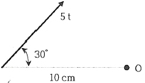
- 15
- 20
- 25
- 30
(정답률: 40%)
35. 단면2차 모멘트 I, 높이 l, 단면적 A인 장주의 세장비(λ)를 표시하는 식은?
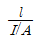
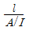
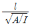
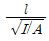
(정답률: 36%)
36. 전철용 지선설비 중 지선의 최소 안전율은?
- 1
- 1.5
- 2
- 2.5
(정답률: 42%)
37. 다음 구조물 중 1차원의 구조물이 아닌 것은?
- 기둥
- 샤프트
- 쉘
- 원통
(정답률: 46%)
38. 다음 라멘구조물의 부정정차수는? (단, 중앙의 절점은 힌지이다.)
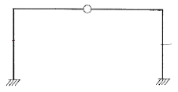
- 1차부정정
- 2차부정정
- 3차부정정
- 4차부정정
(정답률: 56%)
39. 단독지지주의 높이가 7.8m이고 전차선의 수평집중하중이 10kN이다. 이 경우 지면과의 경계점에서의 전단력(kN)은?
- 5
- 10
- 39
- 78
(정답률: 38%)
40. 전차선로 속도등급 300킬로급 이상에서 전차선로 전주경간은 최대 몇 m까지 가능한가?
- 85
- 65
- 45
- 25
(정답률: 35%)
3과목: 전기자기학
41. 전위경도 V와 전계 E의 관계식은?
- E=gradV
- E=divV
- E=-gradV
- E=-divV
(정답률: 40%)
42. 대지의 고유저항이 ρ(Ω·m)일 때 반지름이 a(m)인 그림과 같은 반구 접지극의 접지저항(Ω)은?
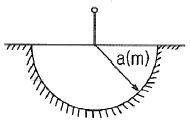
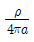
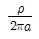
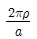
- 2πρa
(정답률: 39%)
43. 임의의 방향으로 배열되었던 강자성체의 자구가 외부 자기장의 힘이 일정치 이상이 되는 순간에 급격히 회전하여 자기장의 방향으로 배열되고 자속밀도가 증가하는 현상을 무엇이라 하는가?
- 자기여효(magnetic aftereffect)
- 바크하우젠 효과(Barkhausen effect)
- 자기왜현상(magneto-striction effect)
- 핀치 효과(Pinch effect)
(정답률: 32%)
44. 정전계에서 도체에 정(+)의 전하를 주었을 때의 설명으로 틀린 것은?
- 도체 표면의 곡률 반지름이 작은 곳에 전하가 많이 분포한다.
- 도체 외측의 표면에만 전하가 분포한다.
- 도체 표면에서 수직으로 전기력선이 출입한다.
- 도체 내에 있는 공동면에도 전하가 골고루 분포한다.
(정답률: 35%)
45. 분극의 세기 P, 전계 E, 전속밀도 D의 관계를 나타낸 것으로 옳은 것은? (단, ε0는 진공의 유전율이고, εr은 유전체의 비유전율이고, ε은 유전체의 유전율이다.)
- P=ε0(ε+1)E
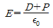
- P=D-ε0E
- ε0=D-E
(정답률: 41%)
46. 비유전율 3, 비투자율 3인 매질에서 전자기파의 진행속도 v(m/s)와 진공에서의 속도 v0(m/s)의 관계는?
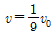
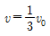
- v=3v0
- v=9v0
(정답률: 37%)
47. 2장의 무한 평판 도체를 4cm의 간격으로 놓은 후 평판 도체 간에 일정한 전계를 인가하였더니 평판 도체 표면에 2μC/m2의 전하밀도가 생겼다. 이 때 평행 도체 표면에 작용하는 정전응력은 약 몇 N/m2인가?
- 0.⑤7
- 0.226
- 0.57
- 2.26
(정답률: 16%)
48. 내부 장치 또는 공간을 물질로 포위시켜 외부 자계의 영향을 차폐시키는 방식을 자기차폐라한다. 다음 중 자기차폐에 가장 적합한 것은?
- 비투자율이 1 보다 작은 역자성체
- 강자성체 중에서 비투자율이 큰 물질
- 강자성체 중에서 비투자율이 작은 물질
- 비투자율에 관계없이 물질의 두께에만 관계되므로 되도록이면 두꺼운 물질
(정답률: 43%)
49. 공기 중에서 2V/m의 전계의 세기에 의한 변위전류밀도의 크기를 2A/m2으로 흐르게 하려면 전계의 주파수는 약 몇 MHz가 되어야 하는가?
- 9000
- 18000
- 36000
- 72000
(정답률: 22%)
50. 그림과 같은 직사각형의 평면 코일이
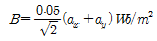
인 자계에 위치하고 있다. 이 코일에 흐르는 전류가 5A일 때 z축에 있는 코일에서의 토크는 약 몇 N·m인가?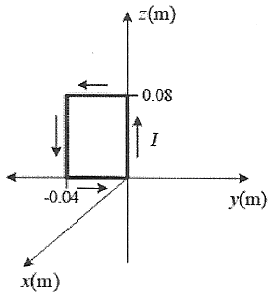
- 2.66×10-4ax
- 5.66×10-4ax
- 2.66×10-4az
- 5.66×10-4az
(정답률: 15%)
51. 압전기 현상에서 전기 분극이 기계적 응력에 수직한 방향으로 발생하는 현상은?
- 종효과
- 횡효과
- 역효과
- 직접효과
(정답률: 40%)
52. 정전용량이 0.03μF인 평행판 공기 콘덴서의 두 극판 사이에 절반 두께의 비유전율 10인 유리판을 극판과 평행하게 넣었다면 이 콘덴서의 정전용량은 약 몇 μF이 되는가?
- 1.83
- 18.3
- 0.⑤5
- 0.55
(정답률: 33%)
53. 반지름이 30cm인 원판 전극의 평행판 콘덴서가 있다. 전극의 간격이 0.1cm이며 전극 사이 유전체의 비윤전율이 4.0이라 한다. 이 콘덴서의 정전용량은 약 몇 μF인가?
- 0.01
- 0.02
- 0.03
- 0.04
(정답률: 21%)
54. 구리의 고유저항은 20℃에서 1.69×10-8Ω·m이고 온도계수는 0.00393이다. 단면적이 2mm2이고 100m인 구리선의 저항값은 40℃에서 약 몇 Ω인가?
- 0.91×10-3
- 1.89×10-3
- 0.91
- 1.89
(정답률: 8%)
55. 자성체 내의 자계의 세기가 H(AT/m)이고 자속밀도가 B(Wb/m2)일 때, 자계 에너지 밀도(J/m3)는?
- HB
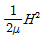
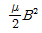
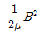
(정답률: 27%)
56. 반지름이 5mm, 길이가 15mm, 비투자율이 50인 자성체·막대에 코일을 감고 전류를 흘려서 자성체 내의 자속밀도를 50Wb/m2으로 하였을 때 자성체 내에서의 자계의 세기는 몇 A/m인가?
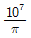
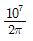
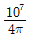
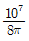
(정답률: 18%)
57. 평행 도선에 같은 크기의 왕복 전류가 흐를 때 두 도선 사이에 작용하는 힘에 대한 설명으로 옳은 것은?
- 흡인력이다.
- 전류의 제곱에 비례한다.
- 주위 매질의 투자율에 반비례한다.
- 두 도선 사이 간격의 제곱에 반비례한다.
(정답률: 29%)
58. 주파수가 100MHz일 때 구리의 표피 두께(skin depth)는 약 몇 mm인가? (단, 구리의 도전율은 5.9×107℧/m이고, 비투자율은 0.99이다.)
- 3.3×10-2
- 6.6×10-2
- 3.3×10-3
- 6.6×10-3
(정답률: 13%)
59. 한 변의 길이가 l(m)인 정사각형 도체 회로에 전류 I(A)를 흘릴 때 회로의 중심점에서의 자계의 세기는 몇 AT/m인가?
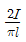
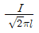
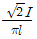
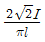
(정답률: 45%)
60. 정전용량이 각각 C1=1μF, C2=2μF인 도체에 전하 Q1=-5μC, Q2=2μC을 각각 주고 각 도체를 가는 철사로 연결하였을 때 C1에서 C2로 이동하는 전하 Q(μC)는?
- -4
- -3.5
- -3
- -1.5
(정답률: 22%)
4과목: 전력공학
61. 3상 3선식 송전선에서 L을 작용 인덕턴스라 하고 Le 및 Lm은 대지를 귀로로 하는 1선의 자기 인덕턴스 및 상호 인덕턴스라고 할 때 이들 사이의 관계식은?
- L=Lm-Le
- L=Le-Lm
- L=Lm+Le
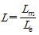
(정답률: 23%)
62. 송전선에서 뇌격에 대한 차폐 등을 위해 가선하는 가공지선에 대한 설명으로 옳은 것은?
- 차폐각은 보통 15~30°정도로 하고 있다.
- 차폐각이 클수록 벼락에 대한 차폐효과가 크다.
- 가공지선을 2선으로 하면 차폐각이 적어진다.
- 가공지선으로는 연동선을 주로 사용한다.
(정답률: 26%)
63. 복도체에서 2본의 전선이 서로 충돌하는 것을 방지하기 위하여 2본의 전선 사이에 적당한 간격을 두어 설치하는 것은?
- 아모로드
- 댐퍼
- 아킹혼
- 스페이서
(정답률: 34%)
64. 주변압기 등에서 발생하는 제5고조파를 줄이는 방법으로 옳은 것은?
- 전력용 콘덴서에 직렬리액터를 연결한다.
- 변압기 2차측에 분로리액터를 연결한다.
- 모선에 방전코일을 연결한다.
- 모선에 공심 리액터를 연결한다.
(정답률: 32%)
65. 계통의 안정도 증진대책이 아닌 것은?
- 발전기나 변압기의 리액턴스를 적재 한다.
- 선로의 회선수를 감소시킨다.
- 중간 조상 방식을 채용한다.
- 고속도 재폐로 방식을 채용한다.
(정답률: 23%)
66. 수전단 전력 원선도의 전력 방정식이 P2r+(Qr+400)2=250000으로 표현되는 전력계통에서 가능한 최대로 공급할 수 있는 부하전력(Pr)과 이때 전압을 일정하게 유지하는데 필요한 무효전력(Qr)은 각각 얼마인가?
- Pr=500, Qr=-400
- Pr=400, Qr=500
- Pr=300, Qr=100
- Pr=200, Qr=-300
(정답률: 42%)
67. 표피효과에 대한 설명으로 옳은 것은?
- 표피효과는 주파수에 비례한다.
- 표피효과는 전선의 단면적에 반비례한다.
- 표피효과는 전선의 비투자율에 반비례한다.
- 표피효과는 전선의 도전율에 반비례한다.
(정답률: 49%)
68. 배전선의 전력손실 경감 대책이 아닌 것은?
- 다중접지 방식을 채용한다.
- 역률을 개선한다.
- 배전 전압을 높인다.
- 부하의 불평형을 방지한다.
(정답률: 30%)
69. 3상 전원에 접속된 △결선의 커패시터를 Y결선으로 바꾸면 진상 용량 QY(kVA)는? (단, Q△는 △결선된 커패시터의 진상 용량이고, QY는 Y결선된 커패시터의 진상 용량이다.)
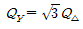
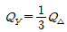
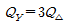
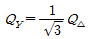
(정답률: 34%)
70. 수전용 변전설비의 1차측 차단기의 차단용량은 주로 어느 것에 의하여 정해지는가?
- 수전 계약용량
- 부하설비의 단락용량
- 공급측 전원의 단락용량
- 수전전력의 역률과 부하율
(정답률: 42%)
71. 1상의 대지 정전용량이 0.5μF, 주파수가 60Hz인 3상 송전선이 있다. 이 선로에 소호리액터를 설치한다면, 소호리액터의 공진리액턴스는 약 몇 Ω이면 되는가?
- 970
- 1370
- 1770
- 3570
(정답률: 20%)
72. 배전선로의 고장 또는 보수 점검 시 정전구간을 축소하기 위하여 사용되는 것은?
- 단로기
- 컷아웃스위치
- 계자저항기
- 구분개폐기
(정답률: 35%)
73. 전압과 유효전력이 일정할 경우 부하 역률이 70%인 선로에서의 저항 손실(P70%)은 역률이 90%인 선로에서의 저항손실 (P90%)과 비교하면 약 얼마인가?
- P70%=0.6P90%
- P70%=1.7P90%
- P70%=0.9P90%
- P70%=2.7P90%
(정답률: 27%)
74. 그림과 같은 이상 변압기에서 2차 측에 5Ω의 저항부하를 연결하였을 때 1차 측에 흐르는 전류(I)는 약 몇 A인가?
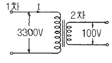
- 0.6
- 1.8
- 20
- 660
(정답률: 28%)
75. 배전선로의 전압을 3kV에서 6kV로 승압하면 전압강하율(δ)은 어떻게 되는가? (단, δ3kV는 전압이 3kV일 때 전압강하율이고, δ6kV는 전압이 6kV일 때 전압강하율이고, 부하는 일정하다고 한다.)
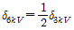
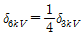
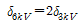
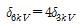
(정답률: 38%)
76. 조속기의 폐쇄시간이 짧을수록 나타나는 현상으로 옳은 것은?
- 수격작용은 작아진다.
- 발전기의 전압 상승률은 커진다.
- 수차의 속도 변동률은 작아진다.
- 수압관 내의 수압 상승률은 작아진다.
(정답률: 15%)
77. 프란시스 수차의 특유속도(m·kW)의 한계를 나타내는 식은? (단, H(m)은 유효낙차이다.)
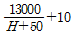
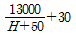
(정답률: 25%)
78. 교류 배전선로에서 전압강하 계산식은 Vd=k(Rcosθ+Xsinθ)I로 표현된다. 3상 3선식 배전선로인 경우에 k는?
- √3
- √2
- 3
- 2
(정답률: 42%)
79. 송전 철탑에서 역섬락을 방지하기 위한 대책은?
- 가공지선의 설치
- 탑각 접지저항의 감소
- 전력선의 연가
- 아크혼의 설치
(정답률: 27%)
80. 정격전압 6600V, Y결선, 3상 발전기의 중성점을 1선 지락 시 지락전류를 100A로 제한하는 저항기로 접지하려고 한다. 저항기의 저항 값은 약 몇 Ω인가?
- 44
- 41
- 38
- 35
(정답률: 24%)